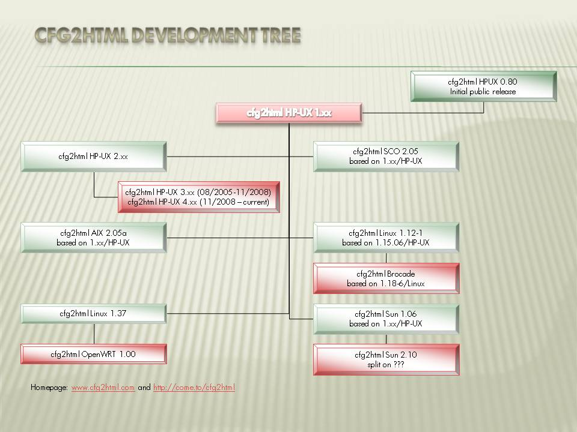

cfg2html is short for " Config to HTML " and is a UNIX shell script initially developed by Ralph Roth [1], for creating system configuration summaries in HTML. Besides it creates a HTML documentation it also creates an plain ASCII system configuration documentation.
Some consider it to be the "Swiss army knife" for the Account Support Engineer, Consultant, Customer Engineer, System Administrator etc. Originally developed in 1998/1999 to plan a system update, it was also found useful to perform basic troubleshooting or performance analysis. The production of a nice HTML and plain ASCII documentation is part of this utility.
Originally developed strictly for HP-UX, it now supports
* HP-UX 10.xx/11.xx * SCO-UNIX * AIX * Sun OS * Linux systems * Brocade switches and small Linux routers like OpenWRT, FreiFunk and embedded systems
Cfg2html is a UNIX shell script similar to check_config or get_config, except that it creates a HTML (and plain ASCII) system documentation for HP-UX 10.xx/11.xx, Integrity Virtual Machines, SCO-UNIX, AIX, Sun OS and Linux systems. Plug-ins for SAP, Oracle, Informix, Serviceguard, Fiber Channel/SAN, TIP/ix, Ignite-UX [2], Mass Storage like MAS, EVAx000, XP48/128/256/512/1024, 1x000/2x000, Network Node Manager and OmniBack/DataProtector etc. are included.
For HP-UX 11.31 and better you need at last cfg2html-hpux version 3.74/4.29 or higher! All 11.31 (v3) issues should be fixed with version 4.41 or higher - any feedback is welcome. Legacy view and agile view should work.
All support, downloads and discussion for cfg2html is preformed through Yahoo Groups, see http://tech.groups.yahoo.com/group/cfg2html. As of Nov. 2009 the group consists of 10400 members. The email traffic is low, approximately one message per week on the mailing list.
Original HP-UX Version: Ralph Roth, ROSE SWE, http://rose.rult.at
End-User License Agreement for the cfg2html package
Below you see the development tree cfg2html has taken the last years.

|
Operating System |
Sourcecode Maintainer (CVS) |
Main authors |
Contributors |
Remarks/ToDo's |
|
HP-UX 11.xx PA-RISC/IA64 |
Martin Kalmbach |
see ToDo.txt |
||
|
Linux IA32 |
Ralph Roth Michael Meifert |
Ralph Roth |
Jeroen Kleen |
Development platform is Debian Linux Problem: Merge side project (cfg2html-linux124HP) by Jeroen Kleen into common a stream. |
|
Linux IA64/IPF |
-- // -- |
< you?> |
Ralph Roth |
EFI releated stuff has to be included! |
|
Linux PA-RISC |
-- // -- |
Ralph Roth |
Linux 2.4.26-32 #1 Sat Jul 31 20:01:18 CEST 2004 parisc GNU/Linux |
|
|
Brocade 4.xx Switches |
Ralph Roth |
Ralph Roth |
Linux 2.4.19 kernel only? |
|
|
Sun Solaris |
Ralph Roth |
Gert Leerdam |
Eduardo Diaz |
Problem: Merge 1.10 and 2.1 streams |
|
Andreas Wizemann |
Olaf Morgenstern |
Problem: Various (buggy) version exists and should be merged into one common 2.x stream! 2.7 stream is now hosted on sf.net |
||
|
OpenWRT |
Ralph Roth |
Ralph Roth |
early beta stage |
|
|
SCO |
-- // -- |
|||
|
Tools and plugins |
||||
|
do-cfg |
-- // -- |
Giuseppe Gentile |
HP-UX and SUN tested |
|
|
runcfg2html |
-- // -- |
runcfg2html will be updated by Andrew (09.2004?). |
||
|
user plugins |
|
Linux + HP-UX |
||
|
-- // -- |
Last updated: Aug 31 2005 |
|||
|
Webspace |
||||
|
-- // -- |
Marc Eberhart - e-projecta GmbH |
Newest beta stuff only! |
||
|
New cfg2html version (aka cfg2html II or cfg2html next generation) |
||||
|
cfg2html |
Chris, Ralph Roth |
New version (2009), supports Linux, HP-UX and AIX |
||
If you want to send us an email, use [cfg2html] in the beginning of the subject - otherwise the chance is high that our spam filters simply deletes your message! The best way to contact Ralph is via instant messenger! Please don't send support questions. We don't have the time to answer and they'll probably be ignored. Bug fixes, or patches that add something useful will be gratefully accepted, however.
Please note that all contribution to cfg2html must be copyright free, because in the future cfg2html will be put under a Open Source License (e.g. GPL v2/v3)!
That is quite easy. First, get yourself GNU diff. The other diffs will work, too, but this tutorial only applies to GNU diff. We want unified diffs!
1. If you change cfg2html, please mark your changes with for example # < name> , < date> . Do not forget to remove all backup files from your editor.
2. Rename the directory with your new, patched cfg2html-x.xx to, say, cfg2html-x.xx.patched
3. Unpack the original distribution tar ball. DO NOT LEAVE in this directory files e.g. from a cfg2html run. Only the original distribution!
4. Now type:
diff -uNr cfg2html-x.xx cfg2html-x.xx.patched | gzip -c > cfg2html-x.xx.diff.gz
This is for GNU diff. You vendors diff may not know the -u option, in which case you should try -c instead.
5. Now send the compressed diff to my email address: cfg2hthml@hotmail.com (subject [cfg2html] PATCH: + your text)
The -u creates a unified diff, which has 3 lines of context per default. This has the advantage that patches can be applied to other versions of cfg2html, too.
The -N treats new files as empty. That means if you add a file, diff will put it in the diff, too. This has the advantage that your file is not lost. It has the disadvantage that Makefile and so on are put into the diff, too. So for patches where you do not add new files, you can omit the -N.
The -r means recursive. For cfg2html this is only important if you change stuff in subdirectories. But it is good habit to use it.
$ gunzip delta-1-14-3rar.gz
$ patch -p0 < delta-1-14-3rar
patching file cfg2html-linux-1.14/cfg2html-linux
patching file cfg2html-linux-1.14/cfg2html_urls.html
Note: This license will change in future to the GNU Public License or a similar license.
This End-User License Agreement ("EULA") is a legal agreement between you (either an individual or a single entity) and the mentioned authors (ROSE SWE and cfg2html authors, see this file or AUTHORS/Linux or readme.txt/hpux) of this Software for the software product identified above, which includes computer software and may include associated media, printed materials, and "online"or electronic documentation ("SOFTWARE PRODUCT"). By installing, copying, or otherwise using the SOFTWARE PRODUCT, you agree to be bounded by the terms of this EULA. If you do not agree to the terms of this EULA, do not install or use the SOFTWARE PRODUCT.SOFTWARE PRODUCT LICENSE. All versions of the SOFTWARE PRODUCT are protected by copyright laws and international copyright treaties, as well as other intellectual property laws and treaties. The sole property belongs to ROSE SWE, the cfg2html authors and maybe 3rd party (status currently unknown). 1. GRANT OF LICENSE. This EULA grants you the following rights: Installation and use. You may install and use an unlimited number of copies of the SOFTWARE PRODUCT.Reproduction and Distribution. You may reproduce and distribute an unlimited number of copies of the SOFTWARE PRODUCT; provided that each copy shall be a true and complete copy, including all copyright and trademark notices, and shall be accompanied by a copy of this EULA (e.g. original tar/depot/rpm/deb archives). 2. DESCRIPTION OF OTHER RIGHTS AND LIMITATIONS. You can reverse engineer, decompile, or disassemble the SOFTWARE PRODUCT. Please send modified versions back to the authors using diff(1) files suitable for patch(1). See the file readme.txt for details.Separation of Components. The SOFTWARE PRODUCT is licensed as a single product. Termination. Without prejudice to any other rights, the authors of this Software may terminate this EULA if you fail to comply with the terms and conditions of this EULA. In such event, you must destroy all copies of the SOFTWARE PRODUCT and all of its component parts. 3. COPYRIGHT. All title and copyrights in and to the SOFTWARE PRODUCT (including but not limited to any images, photographs, animations, video, audio,music, text, and "applets" incorporated into the SOFTWARE PRODUCT), the accompanying printed materials, and any copies of the SOFTWARE PRODUCT are owned by the authors of this Software. The SOFTWARE PRODUCT is protected by copyright laws and international treaty provisions. Therefore, you must treat the SOFTWARE PRODUCT like any other copyrighted material. LIMITED WARRANTY/NO WARRANTIES. The authors of this Software expressly disclaims any warranty for the SOFTWARE PRODUCT. The SOFTWARE PRODUCT and any related documentation is provided "as is" without warranty of any kind, either express or implied, including, without limitation, the implied warranties or merchantability, fitness for a particular purpose, or disarrangement. The entire risk arising out of use or performance of the SOFTWARE PRODUCT remains with you. NO LIABILITY FOR DAMAGES. In no event shall the authors of this Software be liable for any special, consequential, incidental or indirect damages whatsoever (including, without limitation, damages for loss of business profits, business interruption, loss of business information, or any other pecuniary loss) arising out of the use of or inability to use this product, even if the authors of this Software is aware of the possibility of such damages and known defects. WARNING: cfg2html may hang or harm your productive system! This is caused by faulty or hardware related software such as *FDISK, diagnostic tools etc. For this reason the usage of cfg2html on a productive or mission critical system is not encouraged! cfg2html also tends to fill up your file system with large log files and uses your CPU for collecting. If this is a problem for you or your system then simply do not use this program.This software contains bugs! This software is not supported at all - neither by HP (Hewlett-Packard) nor by the authors! The authors does not have the time, budget and equipment to support this free product. The only way to get support is via the cfg2html mailing list!If you can, add places where you have seen cfg2html mentioned, particularly "Dead Tree" mentions, please add them to this article.
David A. Bandel (2003). "Upfront". Linux Journal . On line copy http://www.linuxjournal.com/article/6495
The newest versions are downloadable at
http://www.cfg2html.com (all stuff)
http://www.cfg2html.com (only new betas)
To get a new version visit: http://www.cfg2html.com, and subscribe to the cfg2html mailing list
Oracle only version http://ora2html.sourceforge.net/
AIX only only version http://cfg2html.sourceforge.net/
A recommendation of the Public Administration of Switzerland: http://www.opengovernment.ch/software/cfg2html
Sun BigAdmin System Administration Portal (yes, there's a typo in the link): http://www.sun.com/bigadmin/jsp/descFile.jsp?url=descAll/coniguration_to_html
Mentioned at http://www.cyberpro.com.au/Tips_n_Tricks/Linux_Related_Tips/Setup_cfg2html_-_System_Reporting_Tool/
Mentioned at the Weblog of Thomas Schimana: http://schimana.net/2006/07/25/system-dokumentation-mit-cfg2html/
At CentOS forum: http://www.centos.org/modules/newbb/viewtopic.php?topic_id=6670
At John's Unix Resource: http://www.dogs-chod.co.uk/howto/aixhow.htm#perf
At the Linux Journal: http://www.linuxjournal.com/article/6495
An Interview with Siem Korteweg about the System Configuration Collector at Linux Security.com: http://www.linuxsecurity.com/content/view/117330/49/
Freshmet page: http://freshmeat.net/projects/cfg2html/?topic_id=253
cfg2html - Main external pages
|
www.cfg2html.com - cfg2html.sh |
(Download Area only) currently under construction |
cfg2html - Related stuff
May be outdated or not working any more - please provide feedback! Thank you!
pub 1024D/3426A369 1998-04-29 ROSE SWE, Dipl.-Ing. Ralph Roth
Key fingerprint = 5128 28B8 C884 4F86 5245 8076 4CEA 247E 3426 A369
uid ROSE SWE, Dipl.-Ing. Ralph Roth
sub 1536g/1D5D72F1 1998-04-29
-----BEGIN PGP PUBLIC KEY BLOCK-----
Version: GnuPG v1.2.4 (GNU/Linux)
Comment: http://rose.rult.at
mQGiBDVHgrERBADJUnA7XSGy/5h/LaaoVIgfrBrN/+e33JDnOlpi8qnsy//HQgjV
BG02COM52VQx6st8SXIh5UA06KZwzc4ntUJtVr1oJ7PN5EwmrfKWU/lOiPXIFNfD
+6dnOXqy52R9REGdGKIAqMSkq02GaosQImiHdl8z7Z7pvBWrWYhxvX8qDQCg/3VD
x4UOGRMg0JHYY70F/X8nQk8D/07FTYLSs04g5lo2qipl1xbBLuH3lw8DLceQzDkQ
9exovKbvIpHVOQDUZWFalm7d8j49kZSYa/0PGAr/r7yHveErYE+MASn/hLWtqjLZ
0SVDaP4w5GBSUCpAq05JwYRTmAaaIt8cfAYk82pB4pLQyykCQRMDAyzKwn/012PW
ZCVjA/9YkqEMIPRUvBFQmyJ6JMxgR18sBajziLCZxaIGj6/x+gd01GTUJR9k0Nyz
VmPwWcal1J//Gzo5qKO5rAFYJMTL5t9I5Q08UOJJIpx5UmUFgFKrFD4e5NTr7PEy
xphPr4RFjmHazv3imlDotioDF2oKuejSIOwbUJg2WAzyxhuVvLQ2Uk9TRSBTV0Us
IERpcGwuLUluZy4gUmFscGggUm90aCA8cm9zZV9zd2VAaG90bWFpbC5jb20+iFYE
EBECAA4FAjrXdeUECwMCAQIZAQASCRBM6iR+NCajaQdlR1BHAAEBMtEAniCGwsiW
vnk8zia2tYjWJy9bcdXLAJ44FXDDVKZLzvpP9oVIuWk9oHbMZokBHAQQAQEABgUC
Otd2GQAKCRCcxWwzNQ9rU2urB/45mx2SX6m6yf2vYSXhQJkPnsgCQTNBmTjsIbB7
SAhd1SPks9Br6YLaVWQXaurKREzXmZjReiUWS9MAshXW+MyshEx4C4Y8xLIWy9pF
TjVU9I3iIXDQpWDaPYCG549Xfj/vS+o1ZaHdczrKF8fv08AadQYCzY6zIZFBe7zm
6eXEpFoqk4a+svBAuwUwhgdVlp76k9he2JsgpVzZe7jdSgGs+sGOZ6cb5AU36+3z
6JNeyHHSh7vAew9zx+jScMYHzr+hijic0nuVkTfXhRqFwVKRIgk2c7Pu0O1xsw0M
XUqka4dan05LVRHxLUnh/5dBJddLKQ6Vw8tI/SEbJg3P0i/PtDNST1NFIFNXRSwg
RGlwbC4tSW5nLiBSYWxwaCBSb3RoIDxSYWxwaFJvdGhAZ214Lm5ldD6IUwQQEQIA
CwUCNUeCsQQLAwIBABIJEEzqJH40JqNpB2VHUEcAAQF49ACgxx3Ft8/y+wF/ynRt
6fTFPka/BlIAn0RXO/i1S7GQqUm8WSYDzSvN3PMJiEYEEBECAAYFAjW1VdwACgkQ
eVn+TOMsnWOA8wCgw/suUSfga65YEEB8jjb4W1WpD94An2G95O3gkHymBnNDCJZi
KX8izpxjiEYEEBECAAYFAjY4VEcACgkQmsp4k2gPOscHNQCfdrJLNDxgOT+geNQn
HYvuwqG/kk0AmgLyc85KAMO46YfG0laNNQM5arAyiQEcBBABAQAGBQI613S7AAoJ
EJzFbDM1D2tT73YIAOnTqgLshSfEQmkbbXScS8nNzjAhdNnJBdkkB9+EHe1fNBHf
kIqQ2P8KYVKiTqb4JRW6Fzf/vOfNXFVfKJAP5n34h2flzhFMW7n2tUSqb8XtrlfP
aEeiFslGO0Xb627aJHCDd1Xtw2QXM8hQHrCfTSG7yYsCNroGP9UDsYw60UBYhgE9
ZdlVIv1FpeEqEBlBh+eJ7tBucxXpaWxWdGnaCLu/xnlWUmmYOrXScUNv7yOiw24W
e/6rL/4DNbHY5W8Kd1/pGAGNmQwfRh1GalAy9tQnJPAEN1s27xU0BKvfjWdaF0Na
/L0p33LrTiewSp4CX1TGdDo28R8TBGT/oA1nwauJAFUDBRA2OPVO//pgOsw3QqUB
AeE+Af9H7cjueHQqZfTIhxQs5A/f6ZC/xoV/U84vEsTtdYjfNezCOYdQtWwquMlw
9gfC+Y0m35ekrXfLcsptsCz+uH7zuQGNBDVHgrEQBgD49Vlf3HZSTz09jdvOmeFX
klnN/biudE/F/Ha8g8VHMGHOfMlm/xX5u/2RXscBqtNbno2gpXI61Brwv0YAWCvl
9Ij9WE5J280gtJ3kkQc2azNsOA1FHQ98iLMcfFstjvbzySPAQ/ClWxiNjrtVjLhd
ONM0/XwXV0OjHRhs3jMhLLUq/zzhsSlAGBGNfISnCnLWhsQDGcgHKXrKlQzZlp+r
0ApQmwJG0wg9ZqRdQZ+cfL2JSyIZJrqrol7DVelYfEcAAgIGAN4ZMTzwL+bkAcU+
FTdZmI5UKjplHkV6z3LNfANpiKq6TMlToI/iffe4Jy4K35LYzXj3A78fCsIkOHGI
eH4u7Fe/9GJd/Tc5yuDl0wK/d43JLA3M27ZxKxQxaWHJ8P7lxBGmFbnZpaIR4rvh
qTXRElnK9swSNVASF3mSS8AJjY+KwidoFkulXxyPL0DFpUZah3zyETaKFNNI0Alz
7l1k+3MRuB2rYLfLjFePPTMcRpOINrbZ96EcEzV/qJqmN5DhD4hOBBgRAgAGBQI1
R4KxABIJEEzqJH40JqNpB2VHUEcAAQF6IwCgh0fqSraIVy1/s0Julv8rMuSbG0wA
nA5v4lyYqsa/9e5Hz3LLzV3QMWat
=afAR
-----END PGP PUBLIC KEY BLOCK-----
Last edited: @(#) $Id: cfg2html.html,v 5.14 2013-02-09 10:24:35 ralph Exp $